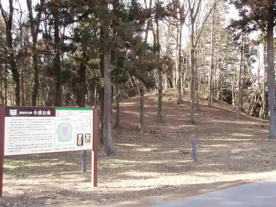
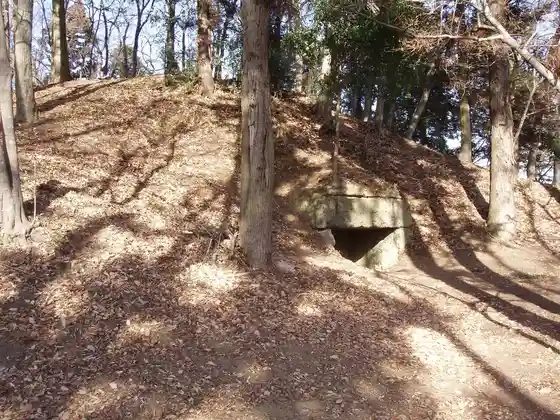
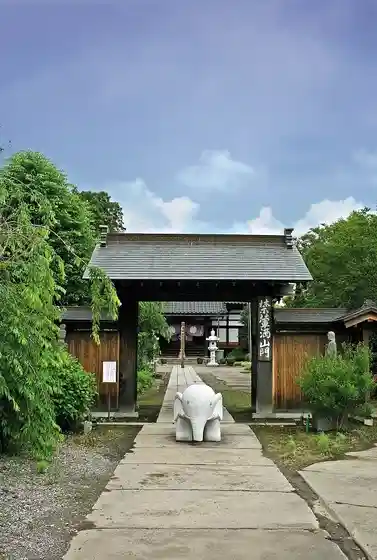

Mibu Ritsu Folk History Museum
Mibu, Tochigi · 0282-82-8544 · Official / source link
Mibu Omocha Museum
Mibu, Tochigi · 0282-86-7111 · Official / source link
Ushizuka Burial Mound
Mibu, Tochigi · 0282-82-8544 · Official / source link

Kurumazuka Burial Mound
Mibu, Tochigi · 0282-82-8544 · Official / source link

Joraku Tera
Mibu, Tochigi · 0282-82-0225 · Official / source link

Mibu Tera
Mibu, Tochigi · 0282-82-0811 · Official / source link
Chausuyama Burial Mound
Mibu, Tochigi · 0282-82-8544 · Official / source link
Shinonome Sakura Hashi
Mibu, Tochigi · 0282-81-1844 · Official / source link
Fujisan Burial Mound
Mibu, Tochigi · 0282-82-8544 · Official / source link
Ogoto Shrine
Mibu, Tochigi · 0282-82-0430 · Official / source link